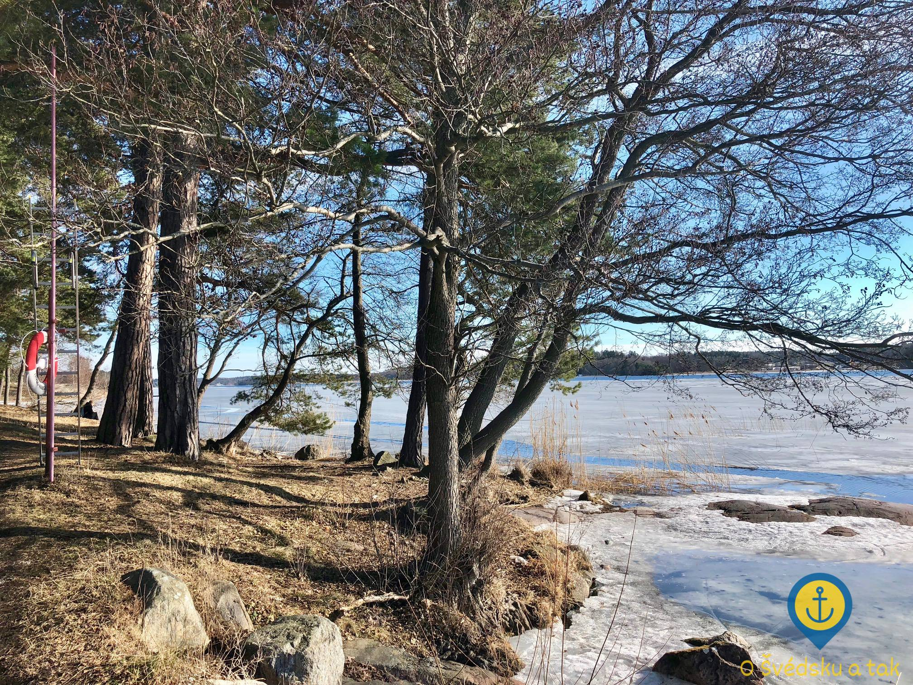
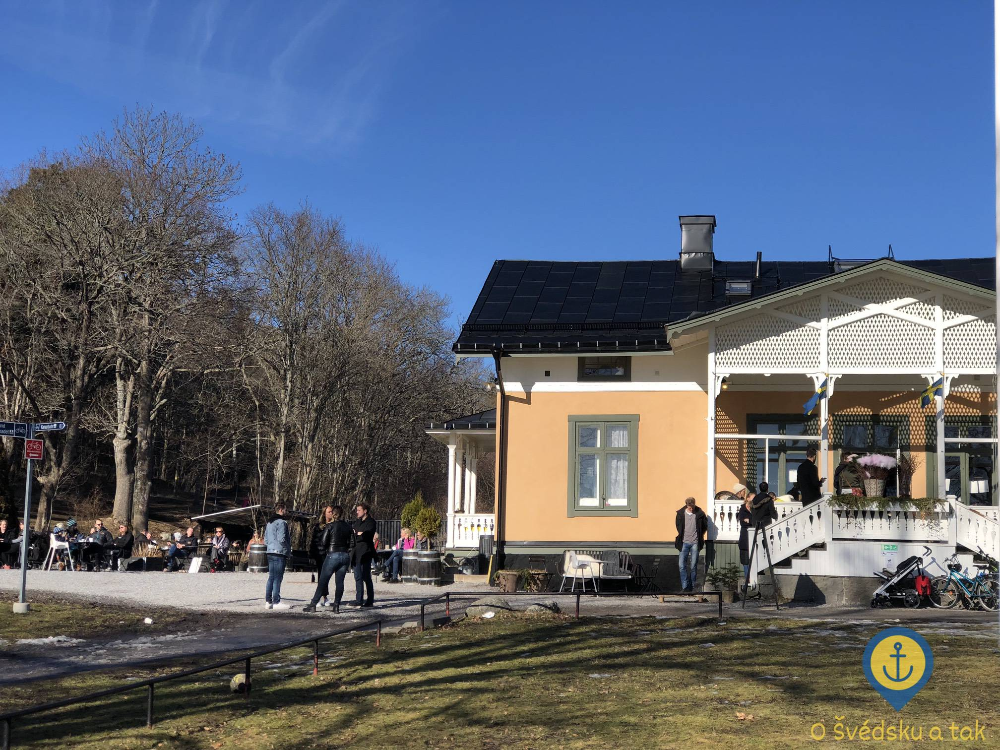
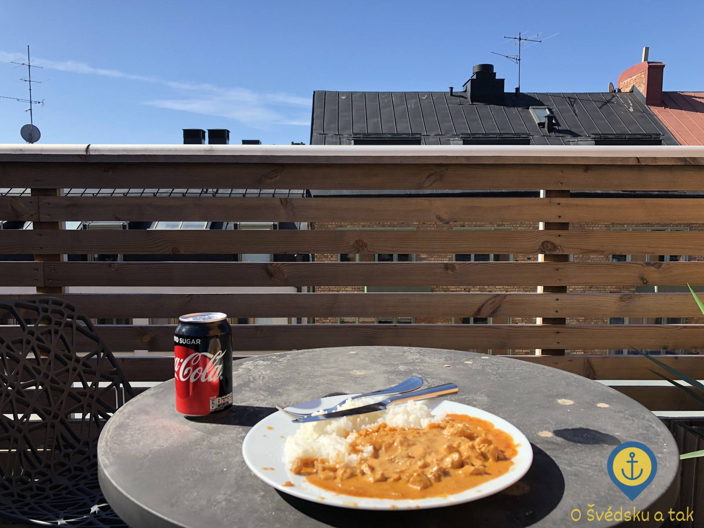
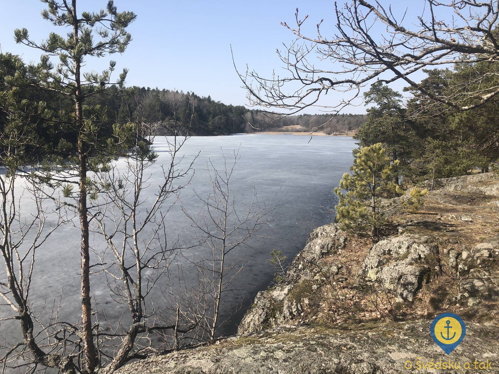
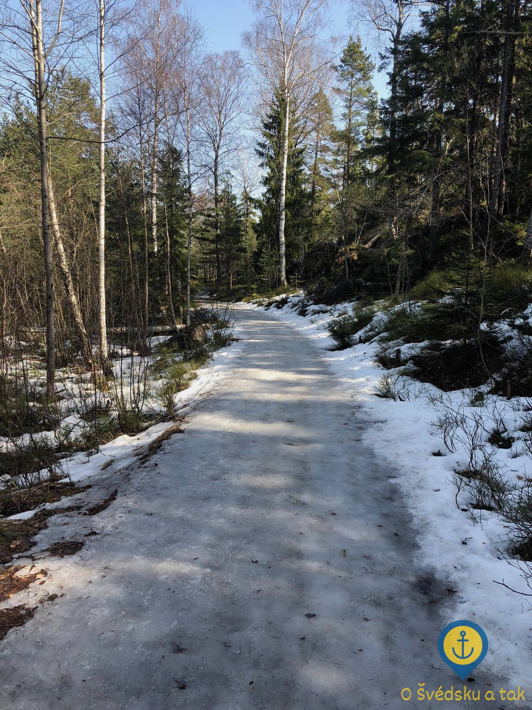
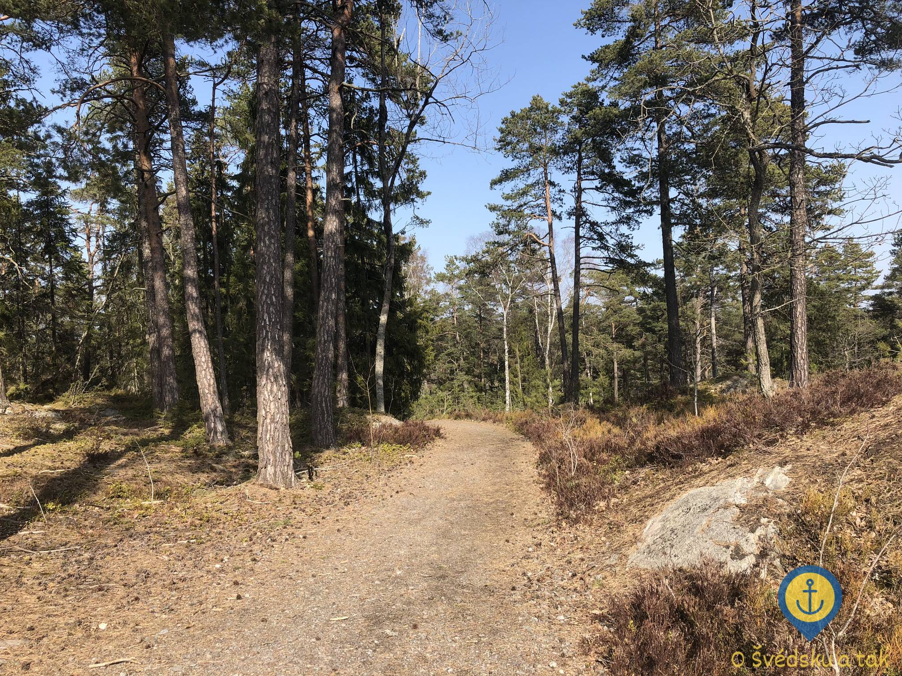
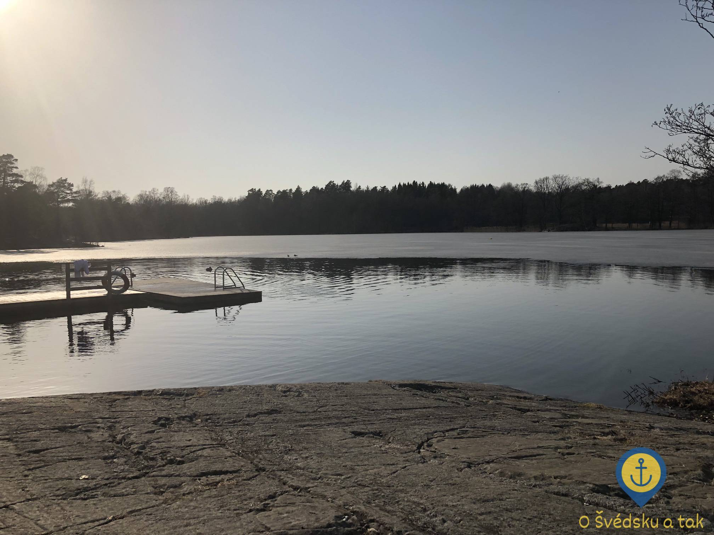
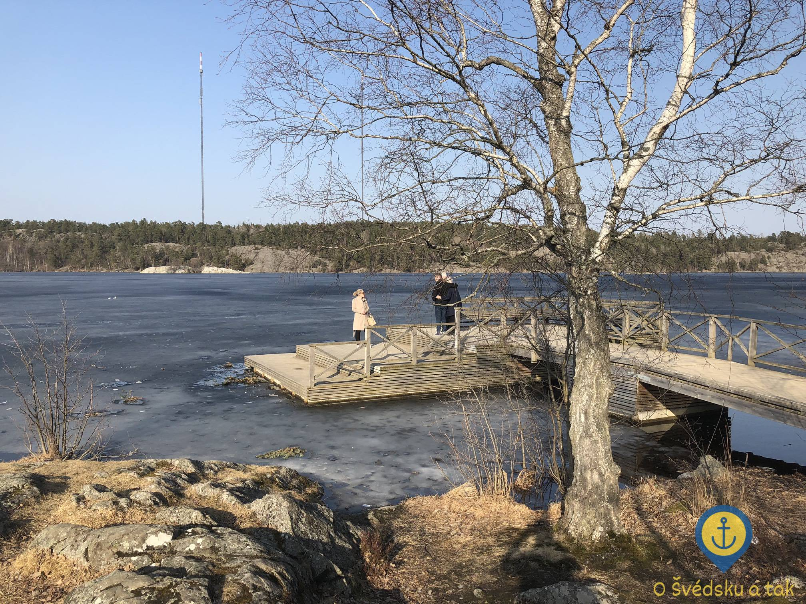

Když na Švédy přijde jaro
Publikováno 14. 4. 2018 (23:02) v kategorii Život ve Švédsku • Autor Knut Holm • Přečtete za 7 minut
Počasí. Nesmrtelné téma všech small talků ve výtahu a vděčný icebreaker na první rande. Ve Švédsku jsou hovory o počasí ještě legendárnější než kdekoliv jinde, a to nejen kvůli velkému množství vtipů, které se na jeho účet pronášejí. Správný Švéd si na počasí stěžuje při každé příležitosti a je to naprosto jediné téma, u kterého snese kritiku na svou domovinu. Pojďme nyní nahlédnout pod pokličku tomu, jak seveřané reagují na změnu teplot a jak vypadá švédské jaro.
Lokální rozdíly ve vnímání teplot
Když jsme loni na dovolené proplouvali francouzské Burgundy na houseboatu, jen stěží jsem si uměl představit, že jednou zažiji větší šok, co se vztahu nějakého národa k teplotám týče. Bylo krásné babí léto na přelomu září a října a celá naše posádka se pohybovala na horní palubě lodi jen v krátkém triku a šortkách, přičemž ve stejném oděvu jsme se vždy táhli městem dokoupit nějaké ty zásoby a obdivovat místní pamětihodnosti. Všichni Francouzi se v ten samý čas a na těch stejných místech pohybovali zásadně v zimních bundách, šálách a čepicích a nechápavě při střetnutí s námi kroutili hlavou ptajíce se, odkud jsme a jestli nám vážně není zima. Mohlo být tak kolem patnácti stupňů, takže z jejich zimomřivosti se rázem stalo téma vtipů celé naší dovolené.
Již po čtvrt roce tady ovšem musím konstatovat, že Švédové u mě Francouze předčili v tomto ohledu na plné čáře a neumím si představit, jak by reagovali Francouzi při jarní návštěvě Švédska.
Je mnoho definic, podle kterých lze určit, kdy začíná jaro. Můj švédský kolega nám na obědě vyprávěl, že jaro začíná, pokud denní teplota alespoň pět dní po sobě nespadne pod sedm stupňů. Nemám nejmenší tušení, jestli je tato definice jakkoliv standardizovaná, ale přinejmenším ryze švédská tedy rozhodně je. Sedm stupňů je totiž jakási pomyslná hranice, kdy si Švédové začínají myslet, že se sluší odložit zimní oděv a začít se naplno věnovat veškerým venkovním aktivitám.
Jaro příchází
První den, kdy tato teplota letos ve Stockholmu nastala, byla neděle 25. března. Když jsem vstal a vykoukl z okna, naprosto jsem nechápal, co se to děje - venku lidé v krátkém triku, se slunečními brýlemi, pán se na lavičce mazal opalovacím krémem. Podlehl jsem davovému šílenství a šel se na vlastní kůži přesvědčit, jestli je venku opravdu takové teplo. Při kontrole teploměru mě ale odvaha trochu přešla, bylo jen osm stupňů nad nulou, tak jsem se radši vybavil mikinou a zimní čepicí.
 Sníh z pobřeží už sice slezl, ale jezero Mälaren je stále zamrzlé (foceno 25. března 2018)
Abych byl fér, musím zmínit, že když jsem ve stejném parku za domem byl naposledy asi dva týdny zpátky, venku bylo mínus dvacet, takže rozdíl teplot byl přesně 28 stupňů. Jakkoliv hodně se to může zdát, aktuální teplota rozhodně neodpovídala tomu, co se venku dělo, a přestože se považuji za poměrně otužilého člověka, toto bylo naprosto mimo moje chápání. Obsluha minigolfu uklízela dráhy a připravovala se na otevření, ve stánku se prodávaly nanuky a točená zmrzlina. Na pláži dováděly děcka na houpačkách, zatímco rodiče se procházeli po zamrzlém jezeře. U místní kavárny byla fronta až ven, zahrádka byla narvaná k prasknutí a nebylo tam jediné volné místo.
 Osm stupňů nad nulou je ideální teplota pro otevření zahrádky - ve Švédsku tato teplota stačí k tomu, aby byla naprosto plná (foceno 25. března 2018)
Jaro je tady
Bohužel se k nelibosti všech ukázalo, že jedna vlaštovka jaro nedělá a následující tři týdny tak opět sněžilo a mrzlo. Situace se znovu opakovala až minulou středu. Protože byl všední den, mohl jsem toto jarní šílenství tentokrát pozorovat v přímém přenosu v práci. Jako vždy jsme klábosili v kuchyňce a ohřívali si jídlo, když najednou kolegu učarovalo slunce za oknem, vykoukl na terasu a prohlásil, že si oběd sní venku. Zatímco všichni přítomní Švédi začali okamžitě odnášet své talíře a příbory ven, ostatní včetně mě se na ně jen nechápavě dívali, přičemž nejvíce výmluvný výraz v obličeji byl mých kolegů z Indie a hovořil za vše. Venku bylo sedm stupňů.
Následující meeting jsme měli v zasedačce přímo vedle terasy, která byla stále poměrně plná. Nedalo mi to, musel jsem to prostě vyzkoušet. Zašel jsem do obchodu pro fikabröd (pečivo, které se jí ke kávě, nejšvédštější zástupce této kategorie je skořicový šnek) a zavelel k první letošní týmové fice na terase. Odvážil jsem se ven opatrně opět v mikině, ale potěšilo mě, že je na sobě měli i Švédové. Indové se nakonec připojili také, pochopitelně v kabátech a zimních bundách.
Musel jsem uznat, že na tom něco je. Po dlouhé a poměrně tuhé zimě, kdy sluneční paprsky pronikaly na zem skrz oblaka maximálně jednou do týdne, bylo pít kafe na terase něco nepopsatelného. Naprosto jsem se přestal divit tomu, co s tím všichni mají a prostě si jen užil ten nádherný okamžik.
 Sedm stupňů nad nulou znamená hurá s obědem na terasu - musíte si ale pospíšit, stejný nápad má dalších 200 kolegů (foceno 12. dubna 2018)
Druhý den, ve čtvrtek, jsem již naprosto nebojácně vyrazil s obědem na terasu a onen nádherný pocit se opakoval. V pátek se mi to už bohužel nepodařilo - ne snad proto, že by jaro bylo opět na ústupu, ale byla prostě už jednoduše plná. Nezbylo mi tak než se připojit ke stolu v kuchyni a závistivě s ostatními pozorovat kolegy na terase. Plán na víkend byl ale jasný - musím někam do přírody!
Jaro je opravdu tady
Po pečlivé úvaze, kde si užít první jarní túru, jsem si nakonec vybral přírodní rezervaci Hellasgården, kam jsem se chystal již delší dobu, ale plány mi kazilo právě počasí. Hellasgården se nachází ve Stockholmu ve čtvrti Nacka a dostat se tam dá velmi pohodlně pomocí MHD. Ode mě to znamená jet metrem na Slussen, tam přestoupit na autobus 401 a za čtvrt hodiny vystoupit na stejnojmenné zastávce. Na místě jsem okoukl mapu a vydal se na hlavní okruh.
 I když je čtrnáct stupňů nad nulou, na jezeře Dammtorpssjön ještě neroztál led (foceno 14. dubna 2018)
Počasí dovolovalo si konečně sundat mikinu a užívat si první letošní procházku jen v krátkém triku, bylo krásných čtrnáct stupňů. Po cestě jsem míjel stejně nadšené lidi, kteří si naplno užívali švédské jaro, někteří dokonce v šortkách. Pomalu si začínám zvykat, přestávám se divit a přemýšlím, kdy vytáhnu ty svoje.
Poprvé se letos dalo vyvalovat venku v krátkém triku (foceno 14. dubna 2018)
Nádherná věc na túrách v teplejším počasí je, že není problém si kdekoliv sednout, lehnout, sníst svačinu. Vzpomínal jsem na příšernou kosu v Tyrestě, kdy byl problém se jen zastavit, aby člověku nebyla zima. Dvacet kilometrů bylo lepší strávit zcela bez sezení. To ale nebyl dnešní případ, takže jsem si naplno vychutnal odpočinek na liduprázdných místech, kterých se po krátkém odbočení ze stezky dalo najít spoustu, poslouchal šumění lesa a plnými doušky nasával příval jarní energie. Litoval jsem akorát toho, že jsem si s sebou nevzal spacák, protože počasí vyloženě vybízelo k prvnímu letošnímu přespání v přírodě a nádherných míst na nocování jsem objevila rovněž hromadu.
 Místy je stezka Hellasgården stále pokrytá sněhem (foceno 14. dubna 2018)
I přes nádherné počasí ale zůstávala krajina plná kontrastů - jezera byla zamrzlá a na stezkách se místy stále povaloval sníh. Přestože mi tedy chvílemi bylo v zimních botách vyloženě vedro, protiskluzovou podrážku jsem naopak místy stále ocenil.
 Na většině míst už není na stezce Hellasgården po sněhu ani památky a působí vyloženě vyprahlým dojmem (foceno 14. dubna 2018)
Koupání v jezeře
Nádherný zážitek jsem se rozhodl zakončit saunou. Švédské sauny se staví na pobřeží moří a jezer a ochlazovací bazének byste v nich hledali marně - tak jako spousta jiných věcí je zde i sauna mimo jiné typicky přírodní zážitek. K ochlazování slouží kromě přírodních vodních ploch také mola postavená za tímto účelem a v případě potřeby i díry vysekané do ledu.
 Ustupující led na jezeře Källtorpsjön umožňuje ochlazení po sauně (foceno 14. dubna 2018)
Můj první kontakt s vodou byl velice opatrný, odvážil jsem se namočit, nakonec i ponořit, ale stále jsem se pevně držel schůdků a rychle ven. Po druhé sauně jsem se osmělil, skočil do vody a vylezl, po těch dalších jsem už zvesela plaval v jezeře spolu s labutěmi a kachnami a zůstal ve vodě několik minut. Musím uznat, že to byl můj další naprosto nepřekonatelný švédský zážitek. Jakmile vylezete z vody, zabalíte se do ručníku, kolem fouká studený vítr a vy tam jen tak stojíte uprostřed té nekonečné přírody, přejete si, aby ten okamžik trval věčně. Při odchodu se ještě můžete ušklíbnout na zvědavce v zimních bundách z protějšího mola, kteří vás celou dobu udiveně, ale s respektem, pozorují.
 Na většině míst je jezero Källtorpsjön stále pokryto ledem a lidé v zimních bundách pozorují koupající se otužilce (foceno 14. dubna 2018)
Pozor na ostré jarní sluníčko
Na závěr tohoto skvělého dne bych chtěl ještě dodat, že jsem při večerním pohledu do zrcadla naprosto pochopil toho pána, kterého jsem tři týdny zpátky viděl z okna svého bytu mazat se opalovacím krémem. Červený obličej naznačuje, jak krátká doba bez slunečních paprsků stačí očím a kůži na to, aby si na ně zcela odvykly. Sluneční brýle naštěstí mám a příště se vybavím i opalovacím krémem. Ostré švédské sluníčko totiž není radno podceňovat, vždyť bylo přes den celých čtrnáct stupňů! A to je ve Švédsku na jaře zatraceně vysoká teplota :-)